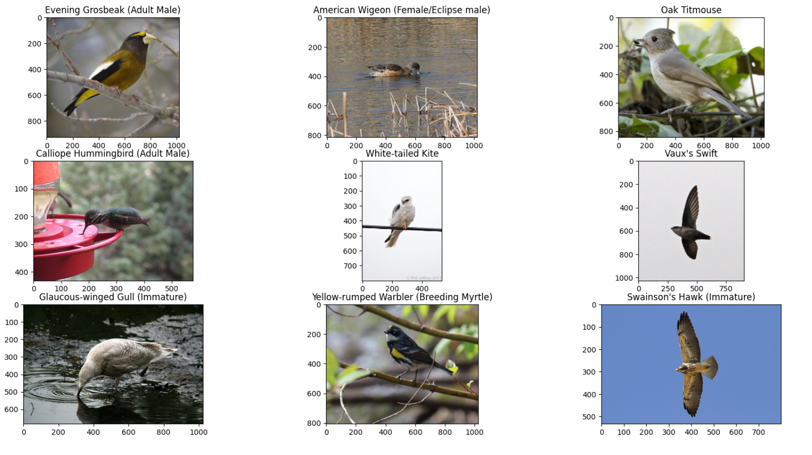
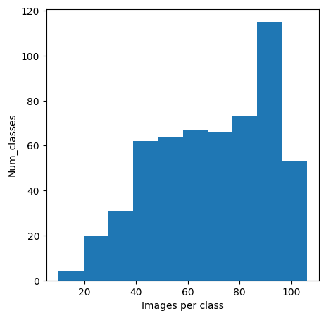
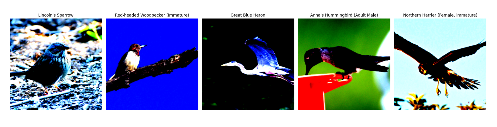
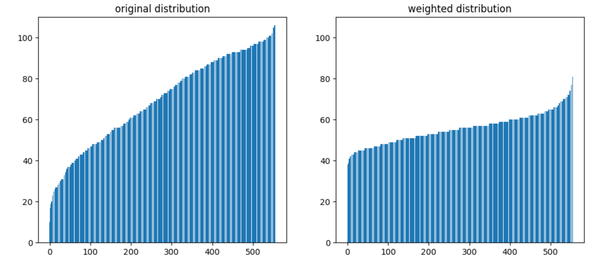

For this competition, we are required to solve an image classification task to identify bird species.
Dataset
There are 555 classes, approximately 38,000 images of varying sizes in the training set, and 10,000 in the testing set.
Below is some sample data.

This histogram of images per class is presented here.

total images: 38562
min class: Dark-eyed Junco (White-winged), num: 10
max class: White-winged Dove, num: 106
standard deviation: 22.06846640893006
Notice that the classes distribution here is uneven. The class with the most instances is ten times the class with the least instances. The standard deviation is also very big.
Balancing the data
We have explored two ways to balance the number of instances for each class.
(1) Data augmentation:
Data augmentation is a technique for artificially increasing the number of samples in the training dataset in order to prevent the model from overfitting. Transformations that are applied should maintain the data’s coherence with the distribution from which it was drawn, as extreme parameters may impede the model’s ability to learn.
In order to optimize the image loading process, we have resized all the images to 256x256 and stored them on an SSD as the new dataset.

We used Resized, Random Crop, Random Horizontal Flip, Random Affine, Random Rotation, Gaussian Blur, Random Gray Scale as transformations for train data.
And we only used Resized, Center Crop as transformations for test data.
(2) Class weights:
We realize in the train dataset, some classes only have little amount of data comparing to other classes. If we trained the model without any preprocessing, the model will have poor performance on these minority classes.
So we used Weighted Random Sampler on the train data to solve this problem, where we assign classes that have more input data with a smaller weight, and assign minority classes with higher weight.

Training
We make use of PyTorch as our principal ML framework. The only components taken from preexisting work are the data_processing function and the training loop, which were taken from the following tutorial .
Model
We have been experimenting with various versions of ResNet, such as Resnet18, ResNet101, and ResNet152. However, Resnet18 was deemed too small to learn complex features, while ResNet101 and 152 were too large, leading to overfitting. Ultimately, ResNet50 was chosen as the ideal balance between generalization and data learning. We attempted to add a self-attention mechanism to the ResNet50 model, but it did not yield better performance, thus the attention block was omitted to reduce training time. Variations of ResNet50 such as ResNetX50, which implements certain optimizations, were trialled, yet the performance was not better than that of the pure ResNet50. This is because the quality of the pretrained weights on ImageNet for ResNetX50 was significantly worse than for the pure version. As a result, for the remainder of this blog post, the pure ResNet50 pretrained on ImageNet will be utilized.
Hyperparameters
In order to monitor the performance of the model, we have created a validation dataset comprising 20% of the training dataset. As the principal performance metric, we utilize accuracy and CrossEntropy as the loss function. As the optimizer, we employ SGD with custom weight decay and momentum . We have tried different batch sizes, and it didn’t influence the performance much although smaller batch sizes tend to help to prevent overfitting. Thus, we used batch size 64 to maximum load our GPU and prevent the model from overfitting.
Progressive resizing
Progressive resizing is a technique to improve the performance of a model by gradually increasing the resolution of the input images during training.
Initially, we trained the model on 128x128 images for 5 epochs with a learning rate of 0.01. Following this, we will continue to train the same model on 224x224 images for 30 epochs, with the learning rate decreasing to 0.001 at the 10th epoch and 0.0001 at the 17th epoch. The weight decay and momentum will remain stable at 0.0005 and 0.9, respectively.
We have experimented with various Pytorch schedulers, however, the manually adjusted learning rate produced the most desirable results.
Evaluation
Prior to evaluating the model on the test dataset, we have retrained it on the entirety of the dataset without dividing into a validation set.
TTA
TTA stands for Test Time Augmentation, which is a technique used in machine learning to improve the accuracy of a model’s predictions. It involves applying data augmentation techniques to the test data during the inference stage, which can help to reduce overfitting and improve the model’s ability to generalize to new data. In our implementation, we apply the same transforms we used for training to every test image four times, and make a prediction for each augmented image. We then average the final class probabilities, resulting in a more stable prediction. This yields an approximate 2% increase in accuracy.
The final pipeline achieved a score of 83% on the test set.